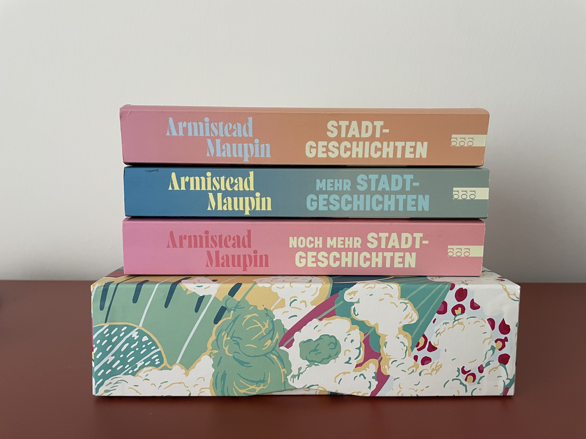
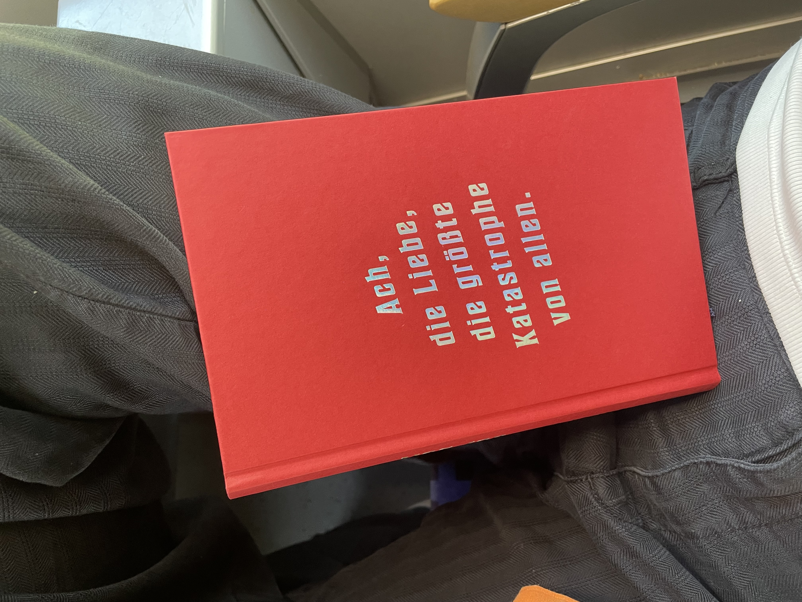
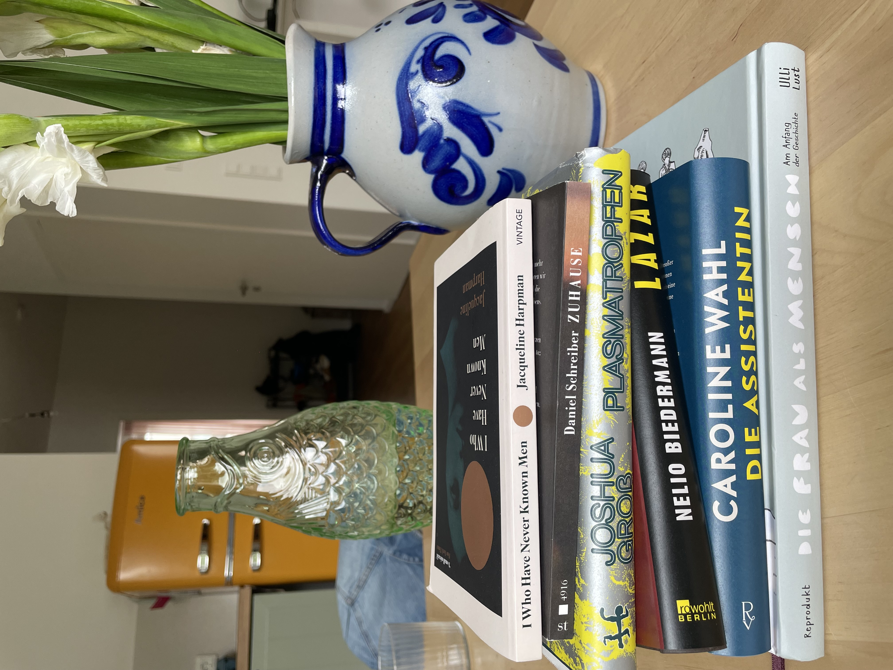

im Sommer habe ich ein paar Bücher gelesen
von mara am sonntag, 31. August 2025
Es folgt ein kleiner Bericht über alle oder zumindest die meisten Bücher, die ich diesen Sommer gelesen habe. Es sind doch einige, was entweder an vielen Zugfahrten oder dem verregneten Juli liegt. Auf jeden Fall war ich nicht all zu wählerisch und habe gelesen, was mir so in die Finger gekommen ist.

Verzweiflungen - Heike Geißler. Dieses Buch las ich vor allem performativ und im Zug. Es hat gut gestartet, dann habe ich irgendwann den Faden verloren und war nur noch unaufmerksam dabei.

Witches, Bitches, It-Girls - Rebekka Endler & Prana Extrem - Joshua Groß. Ich glaube, die beiden waren meine Favoriten und sie haben inhaltlich rein gar nichts miteinander zu tun. Vom ersten habe ich einiges gelernt und es gefällt mir deutlich besser als „Hexen“ von Marion Gibson. Für ein Sachbuch hat es sich super spannend gelesen, auch wenn mir manchmal ein kleines bisschen der rote Faden gefehlt hat. Vom anderen war ich einfach nur verzückt und habe extra langsam gelesen. Vor allem träume ich seitdem von 40 Grad heißen Quellen im Moos mit riesigen Libellen und denke, es ist das Paradies.

Stadtgeschichten Band 1-3 - Armistead Maupin. Die Bücher habe ich bei Langeweile gelesen und war stets bestens unterhalten. Es ist der beste Nachbarschaftsklatsch, den man so auftreiben kann und immer deutlich brisanter als erwartet. Zum Glück habe ich noch ein paar Bände vor mir!

Das Ministerium der Zeit - Kaliane Bradley. Hier hatte ich große Erwartungen, aber Zeitreisen ergeben leider einfach keinen Sinn. Oder ich check sie nicht. Schade!

Anleitung ein anderer zu werden - Édouard Louis. Das war wirklich auch super! Es eignet sich auch klasse zum Angeben im Café oder auf einem Stein. Viel mehr kann ich dazu gar nicht sagen, aber ich will gern noch andere Titel von ihm lesen.
Ich fühl’s nicht - Liv Strömquist. Dieses las ich schnell, es ist schließlich ein Comic (obwohl ich keine 9 Jahre alt bin). Hab einiges gelernt, aber leider war es im Vergleich zu den anderen Titeln von Liv Strömquist ein bisschen eintönig gezeichnet. Es gab keine Farben und hätte auch eine schriftliche Zusammenfassung sein können. Naja, nichtsdestotrotz inhaltlich einwandfrei!

Hier an dieser Stelle habe ich mich verrannt und vermutlich zu viele Bücher auf einmal gekauft. Jetzt muss ich erstmal was abarbeiten.